ငါးပိ
Ngapi
Fermented fish or shrimp paste. Pungent alone, invisible in the pot, and the reason a Burmese curry tastes deeper than it looks.
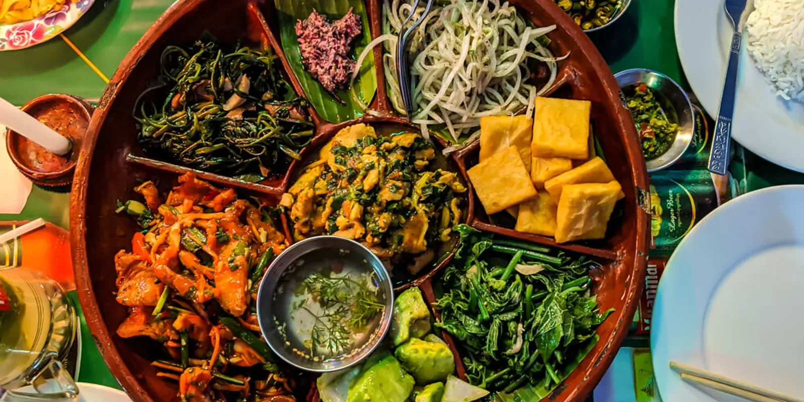
Wheaton, Illinois · Burmese kitchen & tea room
Myanmar runs six and a half hours ahead of the world — and half an hour out of step with everybody else. We brought that clock to Front Street.
Scroll
Only Burmese. Nothing else.
It sits where India, China and Thailand meet, and it borrows from all three without belonging to any of them. Turmeric and garam masala from the west. Noodles and fermenting from the east. Fish sauce and lime from the south. Then something entirely its own on top: balachaung, ngapi, pickled tea.
Burmese cooks build flavour in layers — an oil is bloomed, a paste is fried down until it separates, and only then does anything else go into the pot. It is patient food. You can taste the hours in it.
Burmese kitchens are among the rarest in America. One of them is on Front Street.

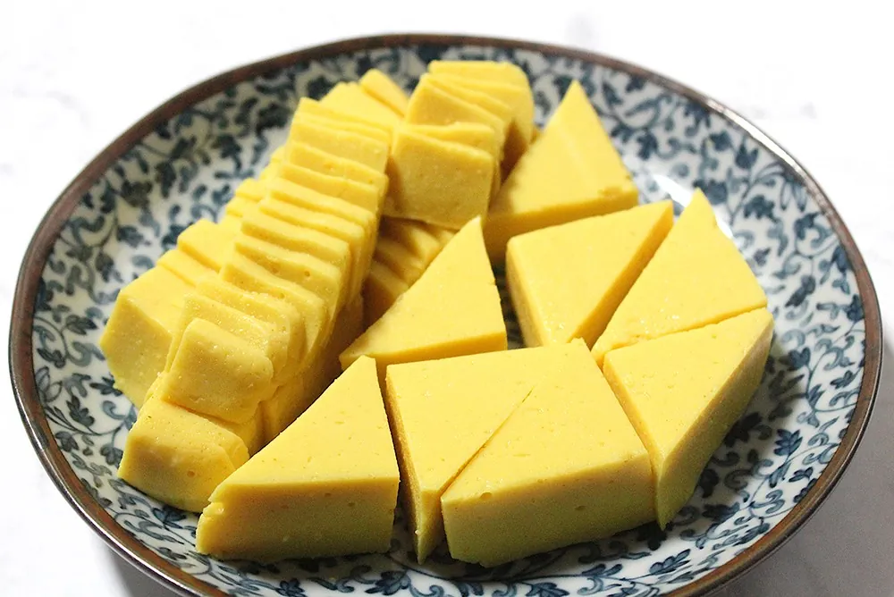
The signature
Burma eats by the hour, not by the course. Turn the dial — or let it find the hour it already is in Yangon.
Live · Myanmar Time (UTC+6:30)
—
now in Yangon
11:00
Select an hour on the dial to read the Burmese day.
What people order
Fermented tea leaves tossed with a crisp mixture of nuts, beans and lettuce. Vegetarian, gluten-free.

Thin rice noodles in fish chowder with hard boiled egg, fried yellow peas and cilantro. Burma's national breakfast.
The signature red pork curry of Burma O'Clock — tender pork simmered down in a rich, patient curry sauce.
Rice noodle in tomato chili bean sauce with minced chicken, ground peanut, sesame and pickled mustard.

Egg noodles and chicken curry in a creamy coconut broth, crowned with crisp noodles and boiled egg.
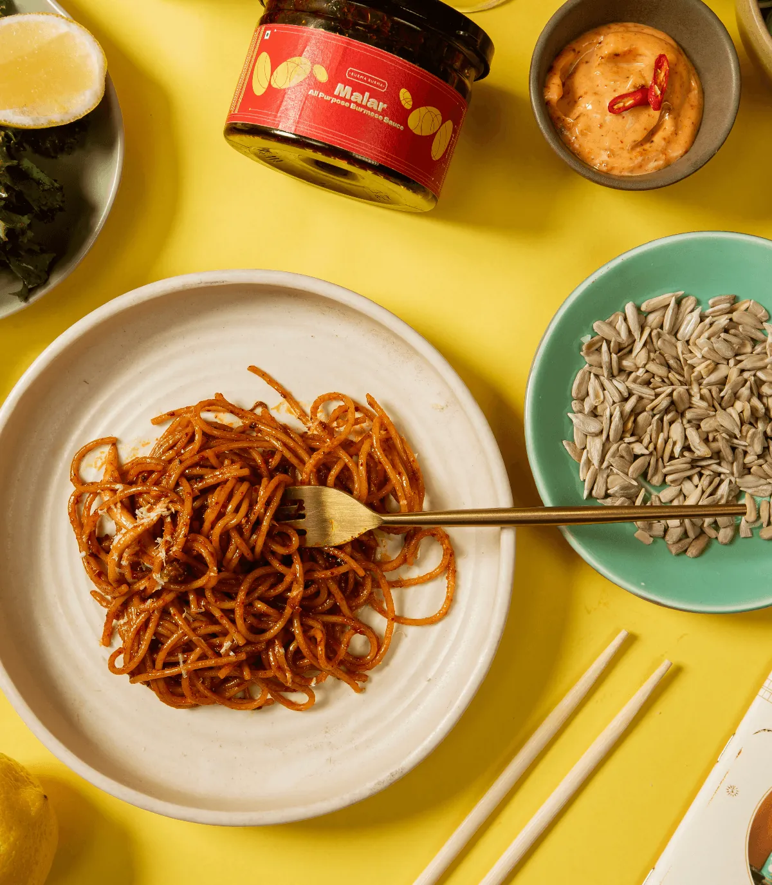
Thick rice noodles in a tangy coconut chicken sauce, topped with boiled egg and crisp noodles.
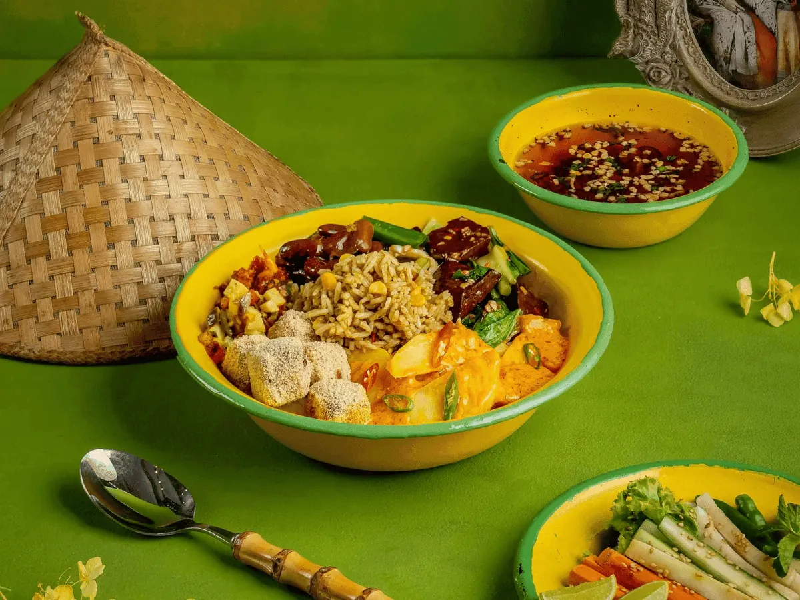
Pickled ginger tossed with lettuce, cabbage, crisp garlic, sesame and peanuts. Sharper than the tea leaf.
Burmese-style mashed potatoes with chili and crisp garlic oil. The snack nobody expects to love.
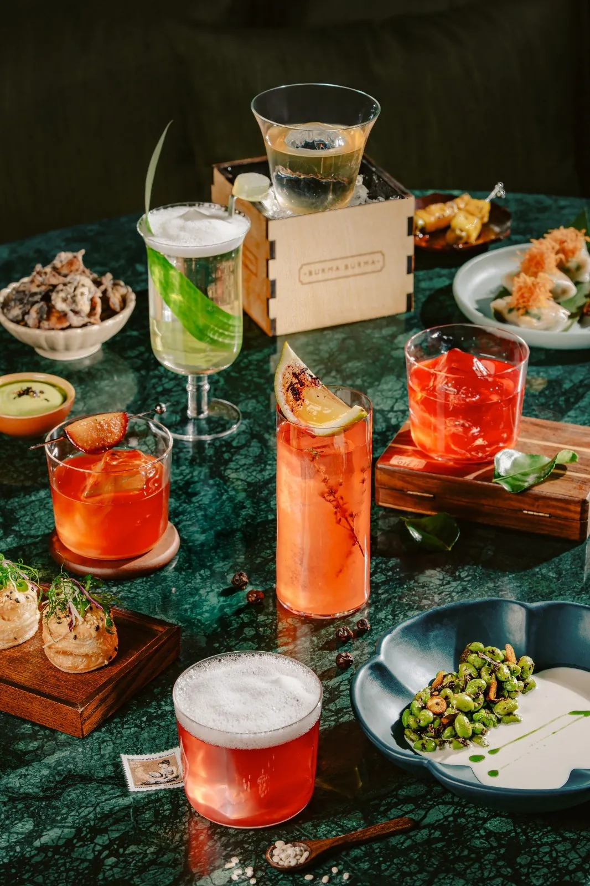
Milk, rose syrup, basil seed, jelly, pudding and ice cream. Completely absurd, in the best way.
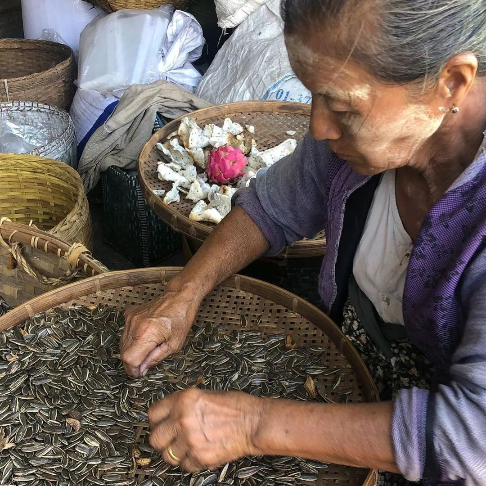
Lahpet · လက်ဖက်
Tea leaves are steamed, packed into bamboo and buried to ferment for months. What comes out is lahpet — soft, sour, faintly bitter, and nothing like a cup of tea.
For centuries a dish of lahpet sealed a peace between warring kingdoms; it was offered to a court to settle a dispute, and refusing it meant the argument continued. It still arrives at Burmese weddings, funerals and apologies.
We toss ours to order, with fried garlic, four kinds of bean and nut, and a squeeze of lime.
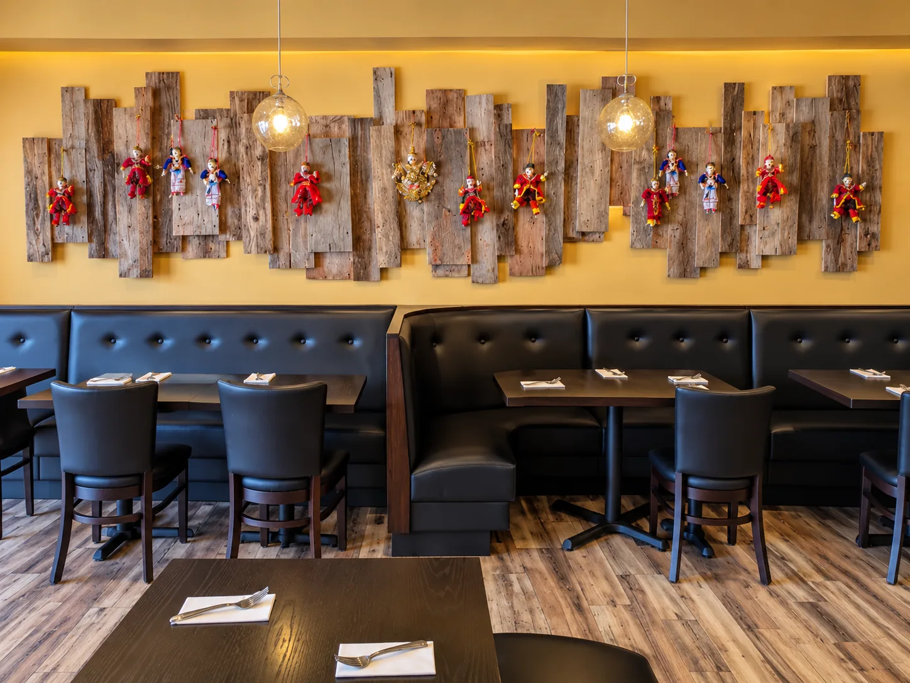
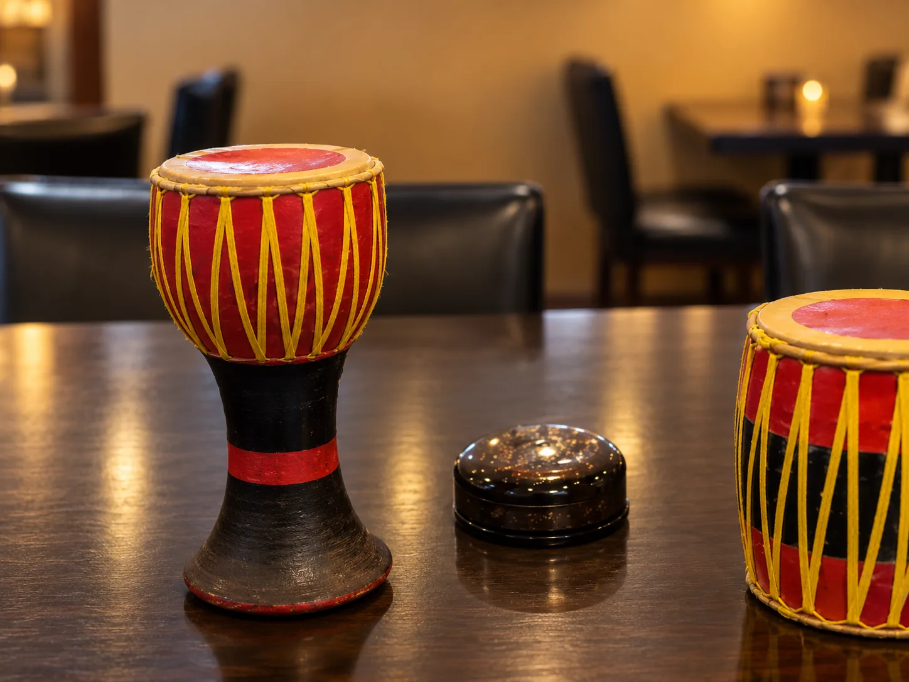
The room
One block from Wheaton City Hall. Teak tones, lacquer red, and enough noise that nobody minds a table of eight.
The curries are meant to be shared and the tea keeps coming, so most tables stay longer than they planned to.
Or call ahead on (630) 868-3303 and we'll start it.
No delivery fee, $15 minimum. Carryout any time we're open.
Tuesday to Saturday 11–9, Sunday 11–8.
The pantry
ငါးပိ
Fermented fish or shrimp paste. Pungent alone, invisible in the pot, and the reason a Burmese curry tastes deeper than it looks.
ဘလချောင်း
Dried shrimp fried crisp with mountains of garlic, shallot and chili in oil. Burma's condiment, eaten by the spoonful over rice.
ကြက်သွန်ဆီ
Not a garnish — a foundation. Slivers of garlic taken slowly to gold, then the oil and the crisps used separately.
ပဲမှုန့်
Toasted for nuttiness, thickened into Shan tofu, dusted over salads. It does in Burma what cornstarch does nowhere else.
In the room

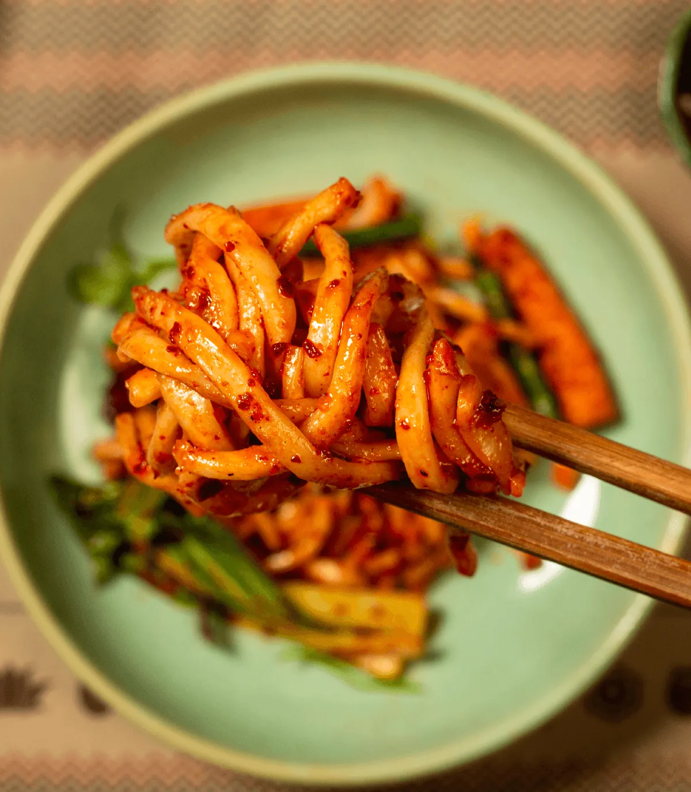
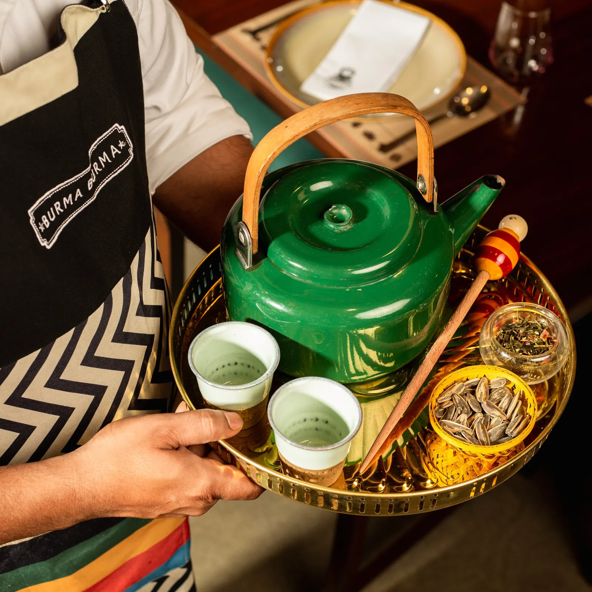
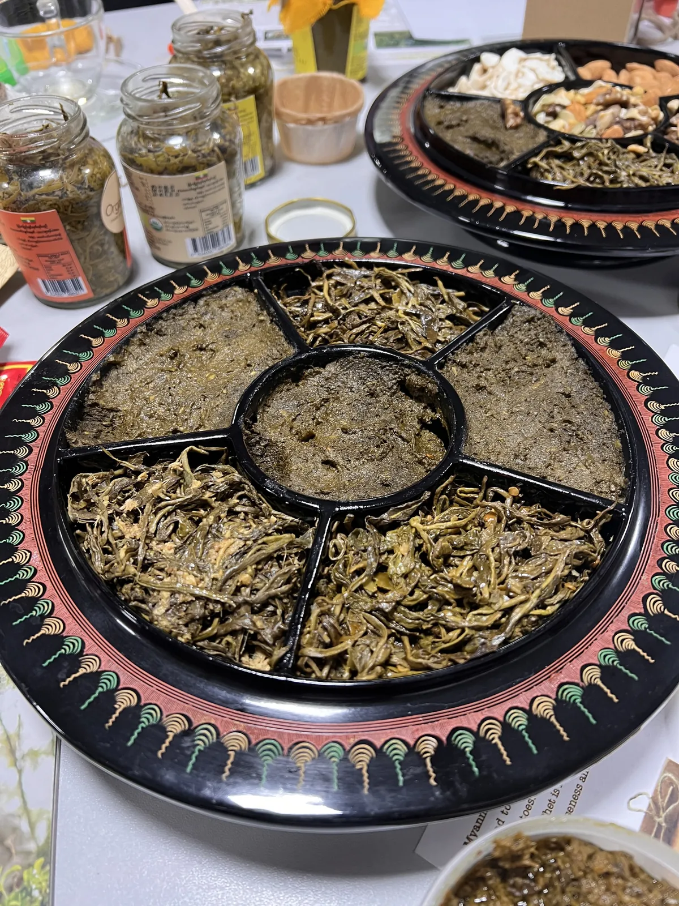

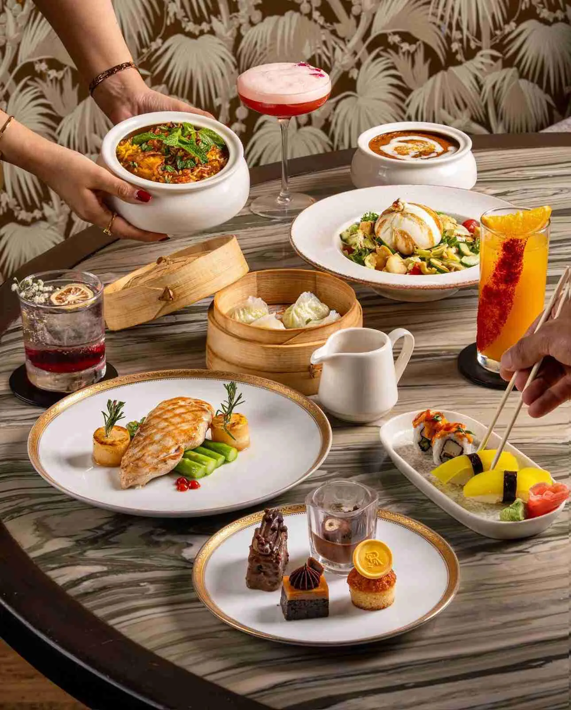
What people say
“If you're looking for authentic Burmese food, this is the spot.”
“Exceptional service meets genuinely good food.”
“Good tasty Burmese food made me remembering of the motherland.”
Come and eat
One block from Wheaton City Hall, in the middle of downtown Wheaton.
Opening hours
Checking hours…
Hours as published by the restaurant — please call to confirm on holidays.